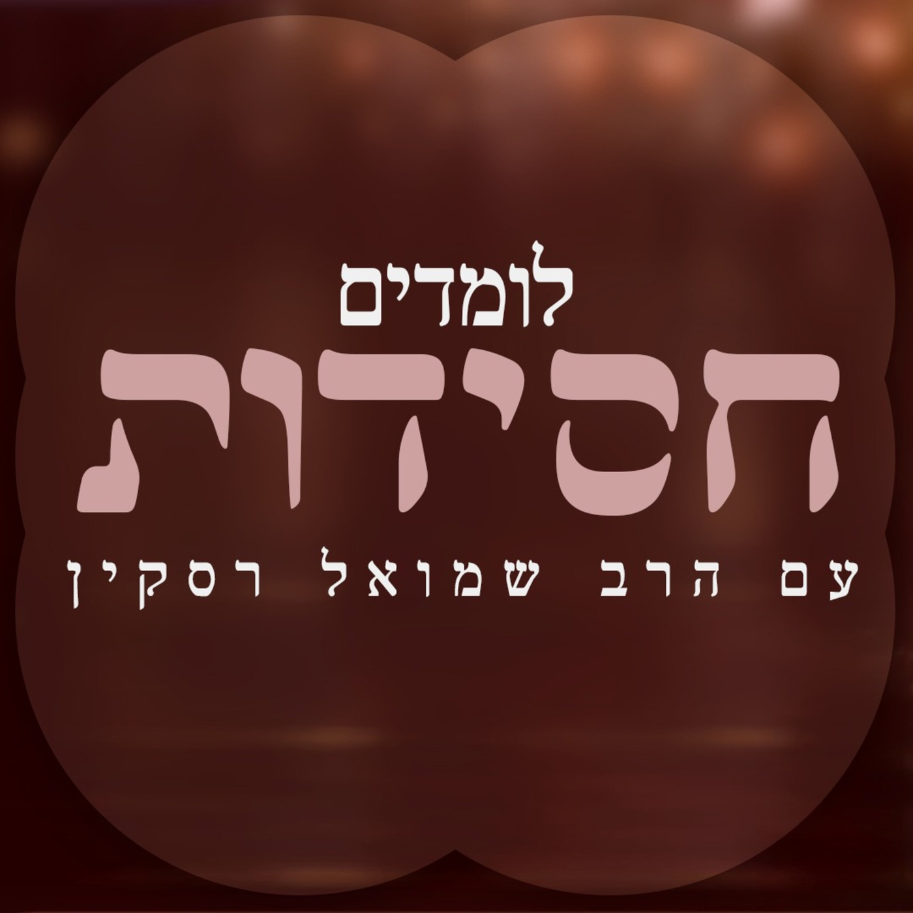

 פיד חיצוני לומדים חסידות הרב שמואל רסקין הקלטות של שיעורים במאמרי חסידות מתורת חב"ד, הרב רסקין עם חברים מקשיבים מעקב RSS מקור Apple Podcasts
סוד השערות: בין קדושה עליונה לטומאה עמוקהלומדים חסידות 2025-07-17 · 27:28 האזנה הוספה לתור נגן הבא סמן כנשמע מקור
תגלחת מצורע 1 - מי זו אשת יפת תואר, ומדוע היא בשבי?לומדים חסידות 2025-07-09 · 32:43 האזנה הוספה לתור נגן הבא סמן כנשמע מקור
השערות של הנשמה: סוד הרצון והטעם הכמוס במצוות ציציתלומדים חסידות 2025-06-23 · 32:50 האזנה הוספה לתור נגן הבא סמן כנשמע מקור
גן עדן מול עולם הבא: מפת הדרגות הרוחניות במצוות ציציתלומדים חסידות 2025-06-23 · 30:45 האזנה הוספה לתור נגן הבא סמן כנשמע מקור
למה צריך מצוות גשמיות? שני סוגי החיות האלוהית בעולםלומדים חסידות 2025-06-09 · 35:25 האזנה הוספה לתור נגן הבא סמן כנשמע מקור
עבור מה באמת ירדה הנשמה? סודות הגשמיות והתחייה - מצוות ציצית 01לומדים חסידות 2025-05-14 · 35:02 האזנה הוספה לתור נגן הבא סמן כנשמע מקור
"זכור" - כוח הזיכרון ככלי מעשי למלחמה בעמלקלומדים חסידות 2025-05-06 · 24:24 האזנה הוספה לתור נגן הבא סמן כנשמע מקור
עמלק - המלחמה בנקודות המעבר: שיעור שביעי במצוות זכירת ומחיית עמלקלומדים חסידות 2025-04-28 · 38:58 האזנה הוספה לתור נגן הבא סמן כנשמע מקור
המסע מהטכני לפנימי: עמלק ומדרגות ההשפעה האלוקיתלומדים חסידות 2025-04-21 · 42:18 האזנה הוספה לתור נגן הבא סמן כנשמע מקור
עמלק בדרך: כשהשכל והלב נפרדיםלומדים חסידות 2025-04-01 · 26:16 האזנה הוספה לתור נגן הבא סמן כנשמע מקור
דרך מצוותיך: סוד הפנים והאחור במצוות זכירת עמלקלומדים חסידות 2025-03-26 · 30:38 האזנה הוספה לתור נגן הבא סמן כנשמע מקור
מצוות זכירת ומחיית עמלק - סודות ה"לב" של הבריאהלומדים חסידות 2025-03-18 · 50:00 האזנה הוספה לתור נגן הבא סמן כנשמע מקור
זכרון ומחיית עמלק - המלחמה בכפירה שבתוכנו ובעולםלומדים חסידות 2025-03-10 · 35:15 האזנה הוספה לתור נגן הבא סמן כנשמע מקור
בלילה ההוא - הפער המטלטל בין הלב הער לאני הישןלומדים חסידות 2025-03-06 · 40:18 האזנה הוספה לתור נגן הבא סמן כנשמע מקור
זכרון ומחיית עמלק: מעבר לפשט המצווהלומדים חסידות 2025-03-04 · 23:33 האזנה הוספה לתור נגן הבא סמן כנשמע מקור
אין עוד מלבדו: סיכום וחיבור הקצוות במצוות מילהלומדים חסידות 2025-02-27 · 32:18 האזנה הוספה לתור נגן הבא סמן כנשמע מקור
בלילה ההוא - הלב הער בתוך השינהלומדים חסידות 2025-02-24 · 38:35 האזנה הוספה לתור נגן הבא סמן כנשמע מקור
בלילה ההוא - מסע בין שתי גאולותלומדים חסידות 2025-02-18 · 39:17 האזנה הוספה לתור נגן הבא סמן כנשמע מקור
מצוות מילה - סוד החשמל העליון והשפעת החיות בעולמותלומדים חסידות 2025-02-17 · 34:41 האזנה הוספה לתור נגן הבא סמן כנשמע מקור
סודות הפרוכת: מסע בין העולמות העליוניםלומדים חסידות 2025-02-11 · 46:33 האזנה הוספה לתור נגן הבא סמן כנשמע מקור
אין עוד מלבדו: מבט חסידי על טעות אומות העולםלומדים חסידות 2025-02-04 · 35:15 האזנה הוספה לתור נגן הבא סמן כנשמע מקור
השמש כטרנספורמטור: סוד הריבוי מן האחדות במצוות מילהלומדים חסידות 2025-01-27 · 35:49 האזנה הוספה לתור נגן הבא סמן כנשמע מקור
מצוות מילה: סוד הריבוי והאחדות בבריאהלומדים חסידות 2025-01-20 · 30:51 האזנה הוספה לתור נגן הבא סמן כנשמע מקור
מצוות מילה (חלק ב) - סוד החומר והצורה בשמשלומדים חסידות 2025-01-13 · 18:58 האזנה הוספה לתור נגן הבא סמן כנשמע מקור
מצוות מילה - שער לספר 'דרך מצוותיך'לומדים חסידות 2025-01-07 · 22:17 האזנה הוספה לתור נגן הבא סמן כנשמע מקור
רני ושמחי בת ציון (חלק ב): התגלות אלוקית בזמן החושךלומדים חסידות 2024-12-30 · 50:38 האזנה הוספה לתור נגן הבא סמן כנשמע מקור
רני ושמחי בת ציון (חלק א): סוד הרינה והשמחהלומדים חסידות 2024-12-30 · 46:27 האזנה הוספה לתור נגן הבא סמן כנשמע מקור
"מזמור שיר חנוכת הבית": סוד הנשמה והמקדשלומדים חסידות 2024-12-25 · 35:29 האזנה הוספה לתור נגן הבא סמן כנשמע מקור
כוס הברכה של דוד: סוד המלכות והגאולה העתידהלומדים חסידות 2024-12-23 · 4:48 האזנה הוספה לתור נגן הבא סמן כנשמע מקור
סוד היין והברכה: העלייה העתידית של העולמותלומדים חסידות 2024-11-18 · 37:48 האזנה הוספה לתור נגן הבא סמן כנשמע מקור
חטא עץ הדעת ו"עץ החיים" - תובנות מ"דרוש הזימון"לומדים חסידות 2024-11-11 · 33:04 האזנה הוספה לתור נגן הבא סמן כנשמע מקור
"דרוש הזימון (חלק ג'): סוד האכילה בקדושה והקשר לעולם התוהו"לומדים חסידות 2024-11-04 · 29:12 האזנה הוספה לתור נגן הבא סמן כנשמע מקור
כוח השלושה - מאמר 'דרוש הזימון' חלק ב'"לומדים חסידות 2024-10-28 · 20:18 האזנה הוספה לתור נגן הבא סמן כנשמע מקור
סוד האכילה בחסידות - מאמר 'דרוש הזימון' חלק א'"לומדים חסידות 2024-10-27 · 26:41 האזנה הוספה לתור נגן הבא סמן כנשמע מקור
סודות ראש השנה: מבט חסידי עמוק על יום הדיןלומדים חסידות 2024-09-23 · 14:08 האזנה הוספה לתור נגן הבא סמן כנשמע מקור
גילוי המלך בשווקים: סוד עבודת הרחמנות ב"אני לדודי"לומדים חסידות 2024-09-16 · 21:53 האזנה הוספה לתור נגן הבא סמן כנשמע מקור
אלול של אהבה גדולה - שיעור (3/3) במאמר 'אני לדודי תשל"ב'לומדים חסידות 2024-09-03 · 41:53 האזנה הוספה לתור נגן הבא סמן כנשמע מקור
אז מה עושים באלול? שיעור (2/3) במאמר 'אני לדודי תשל"ב'לומדים חסידות 2024-09-03 · 41:48 האזנה הוספה לתור נגן הבא סמן כנשמע מקור
שיחה על מהות: מה זה חודש אלול? שיעור (1/3) במאמר "אני לדודי תשל"ב"לומדים חסידות 2024-09-03 · 51:58 האזנה הוספה לתור נגן הבא סמן כנשמע מקור
למלא את האוצר הפנימי | "אני לדודי" #1לומדים חסידות 2024-08-19 · 32:26 האזנה הוספה לתור נגן הבא סמן כנשמע מקור
כשבאה שבת | "לא הביט און ביעקב" #6לומדים חסידות 2024-08-11 · 23:00 האזנה הוספה לתור נגן הבא סמן כנשמע מקור
סוד הנקודה של מודה אני | "לא הביט און ביעקב" #5לומדים חסידות 2024-08-06 · 20:22 האזנה הוספה לתור נגן הבא סמן כנשמע מקור
על מה חושבים המלאכים? | "לא הביט און ביעקב" #34לומדים חסידות 2024-07-30 · 33:38 האזנה הוספה לתור נגן הבא סמן כנשמע מקור
הסוד של חוט השדרה | "לא הביט און ביעקב" #3לומדים חסידות 2024-07-25 · 29:45 האזנה הוספה לתור נגן הבא סמן כנשמע מקור
מדוע התפילה איננה מצווה? | "לא הביט און ביעקב" #2לומדים חסידות 2024-07-08 · 31:44 האזנה הוספה לתור נגן הבא סמן כנשמע מקור
מה זה 'דירה בתחתונים'? | "לא הביט און ביעקב" | ליקוטי תורה של בעל התניא #1לומדים חסידות 2024-07-01 · 35:31 האזנה הוספה לתור נגן הבא סמן כנשמע מקור
עבודה עם הבהמית | "אדם כי יקריב" | ליקוטי תורה של בעל התניא #4לומדים חסידות 2024-06-24 · 21:05 האזנה הוספה לתור נגן הבא סמן כנשמע מקור
עבודה עם הבהמית | "אדם כי יקריב" | ליקוטי תורה של בעל התניא #3לומדים חסידות 2024-06-05 · 36:01 האזנה הוספה לתור נגן הבא סמן כנשמע מקור
העבודה עם הבהמית | "אדם כי יקריב" | ליקוטי תורה של בעל התניא #2לומדים חסידות 2024-05-27 · 30:03 האזנה הוספה לתור נגן הבא סמן כנשמע מקור
העבודה עם הבהמית | "אדם כי יקריב" | ליקוטי תורה של בעל התניא #1לומדים חסידות 2024-05-06 · 22:16 האזנה הוספה לתור נגן הבא סמן כנשמע מקור
בחירתו של הפיקח (2/2) | "ביום עשתי עשר" | מאמר של הרבי משנת תשל"אלומדים חסידות 2024-04-17 · 47:54 האזנה הוספה לתור נגן הבא סמן כנשמע מקור
בחירתו של הפיקח (1/2) | "ביום עשתי עשר" | מאמר של הרבי משנת תשל"אלומדים חסידות 2024-04-16 · 54:42 האזנה הוספה לתור נגן הבא סמן כנשמע מקור
פסח | "בכל דור ודור" | מאמר של הרבי משנת תשמ"הלומדים חסידות 2024-04-15 · 30:38 האזנה הוספה לתור נגן הבא סמן כנשמע מקור
פסח | "ששת ימים" | ליקוטי תורה של בעל התניא שיעור #4לומדים חסידות 2024-04-08 · 23:55 האזנה הוספה לתור נגן הבא סמן כנשמע מקור
פסח | "ששת ימים" | ליקוטי תורה של בעל התניא שיעור #3לומדים חסידות 2024-04-01 · 39:21 האזנה הוספה לתור נגן הבא סמן כנשמע מקור
פסח | "ששת ימים" | ליקוטי תורה של בעל התניא שיעור מספר 2לומדים חסידות 2024-03-28 · 28:32 האזנה הוספה לתור נגן הבא סמן כנשמע מקור
פסח | "ששת ימים" | ליקוטי תורה של בעל התניא שיעור מספר 1לומדים חסידות 2024-03-26 · 45:59 האזנה הוספה לתור נגן הבא סמן כנשמע מקור
פורים | "חייב אינש" | תורה אור של בעל התניא שיעור מספר 6לומדים חסידות 2024-03-11 · 27:03 האזנה הוספה לתור נגן הבא סמן כנשמע מקור
פורים | "חייב אינש" | תורה אור של בעל התניא שיעור מספר 5לומדים חסידות 2024-03-04 · 32:23 האזנה הוספה לתור נגן הבא סמן כנשמע מקור
פורים | "חייב אינש" | תורה אור של בעל התניא שיעור מספר 4לומדים חסידות 2024-02-26 · 43:33 האזנה הוספה לתור נגן הבא סמן כנשמע מקור
פורים | "חייב אינש" | תורה אור של בעל התניא שיעור מספר 3לומדים חסידות 2024-02-19 · 40:44 האזנה הוספה לתור נגן הבא סמן כנשמע מקור
פורים | "חייב אינש" | תורה אור של בעל התניא שיעור מספר 2לומדים חסידות 2024-02-15 · 48:18 האזנה הוספה לתור נגן הבא סמן כנשמע מקור
פורים | "חייב אינש" | תורה אור של בעל התניא שיעור מספר 1לומדים חסידות 2024-02-14 · 34:11 האזנה הוספה לתור נגן הבא סמן כנשמע מקור